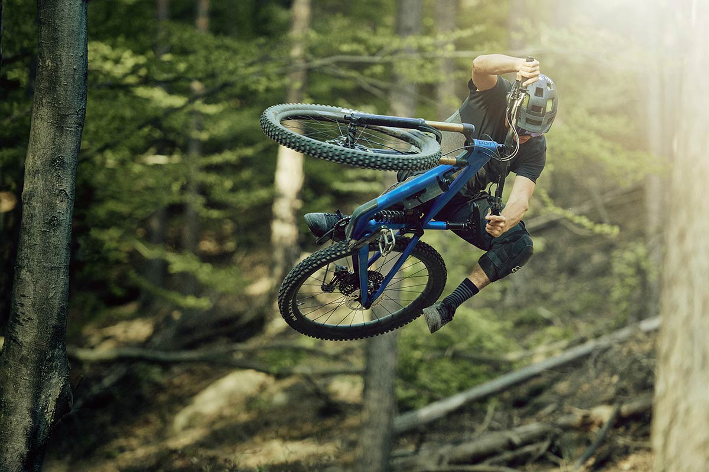

Mountain Biking Maintenance: MAINTENANCE TIPS
| TIPS | WHAT TO DO |
|---|---|
Clean your bike.Want to extend the life of your ride? Keeping it clean on a consistent basis is a sure-fire way of doing so. |
Use a basic biodegradable cleaner such as Simple Green, a sponge, a towel and an old toothbrush to clean everything: the frame, chain, chain rings, cassette, derailleurs, pedals, brakes, and seat. No need to use bucket-loads of water or (especially) strong jets; a gentle rain-like spray or mist will do just fine to rinse away any soap residue. Also, remove the seat post for a thorough clean, and add a small amount of bike grease before reinstalling it. Your local bike shop's mechanic will thank you! |
Inspect your brakes.Brakes are a vital part of your bike, and ensuring they are in good working condition and properly adjusted can mean the difference between a flawlessly-maneuvered corner and losing control, which could lead to serious injuries. Keep these puppies running smoothly and they’ll pay you back in spades. Make sure brakes are thoroughly inspected during each mountain bike tune up. |
Check the brake pads, the small rectangular metallic and/or rubberized surface that actually rubs against the disk (or wheel rim). These wear down over time and need to be replaced. Use a flashlight to assess whether the pads are wearing evenly and replace them if they show excessive wear. |
Watch your wheels.Wheels (rims) hold your tires in place and provide stability and smoothness while riding. Properly tuned and trued wheels (that don’t wobble or rub against the brakes) mean consistent contact between tires and dirt. |
Elevate your bike and spin the wheels; both should move smoothly, without wobbling. A wobbly rim can be adjusted with a spoke wrench - a simple fix a bike mechanic should take on if you’re not sure what you’re doing. Replace your wheels if denting or other damage is excessive. |
Inspect the drivetrain.bike’s drivetrain includes the pedals, chain, chainring, derailleur (the ingenious little device that moves the chain to make riding easier or harder) and rear-wheel cassette (the set of teeth attached to your rear wheel). The drivetrain is important because it transfers the power generated by your legs to the rear wheel, which moves the bike. So make it a regular routine for your mtb maintenance. |
You’ll likely need a partner or bike stand to assist with this part of the tune-up. Raise the rear wheel and spin as you did when checking the wheels (task #3 above). This time, shift through all the gears. Shifting should be smooth and easy to perform. Inspect the chain, chainrings, derailleur and cassette for damage (excessive wear, missing teeth, dents, scrapes, etc.). Note that small chainrings wear out sooner than large chainrings, and that the chain is the most frequently replaced component of the drivetrain (should be done every 2,000-3,000 miles). Replacement cost is generally between $20 and $50. Waiting too long to replace a chain will wear down the other drivetrain components faster. If shifting is not smooth, it’s best to take your bike to a repair shop to have it looked at by a professional. |
Check both tires.Mountain bike tires offer traction with the ground, allowing travel over a variety of unlikely surfaces, like mud, rocks, roots and ladder bridges. In addition, they form a flexible cushion which helps smooth out bumps and thumps along the way, making for a more comfortable ride. |
First, check your tire pressure. The ideal pressure will vary according to the terrain you’re riding, but as a general rule, you’ll want to keep your tire pressure between 30-45 psi. Lower psi will provide more traction (grip) on technical and loose terrain, but is more prone to flats. Air will escape naturally from your tires, so be sure to invest in a good floor pump with gauge, and check tire pressure often. Second, check your tires for splits, cracks or tears, especially along the side-walls (where the tire doesn’t touch the ground). You’ll also want to check the tread for uneven or excessive wear, in which case you’ll want to have it replaced. Damaged tires are prone to burst, causing a sudden loss of control—a potentially dangerous situation. Changing tubes and tires is a simple fix that requires tire levers and a pump to re-inflate the inner tube. |
Check the cables.Cables are either made of tightly coiled metal wire or oil caged in a plastic housing. Cables connect the shifters and brakes on the handlebars to the derailleur and brake pads. Those connected to the shifters assist with moving the chain from one gear to another via the derailleur, while those connected to the brakes aid in stopping the bike when the lever on the handlebars is pulled. |
Inspect the cable and surrounding rubber housing for cracks, crimps, rust, dirt and looseness. New cables and/or oil make shifting and braking smooth, which increases bike performance. If braking/shifting is not optimal, get your cables replaced or oil changed at your local bike shop. Unless you're well trained in this task, changing cables/oil can be tricky and time consuming. Schedule replacement every 2-5 years based on use. If you ride your bike year-round, consider replacing your cables/oil yearly. |
Add lubricant.Oil lubricant coats the chain and other components of the drivetrain, helping them last longer and work more efficiently. Lube also reduces accumulation of dirt and grime, which helps increase performance of the moving parts. |
Apply lubricant evenly to the chain while slowly rotating the pedals in a counter-clockwise direction. Also, remember to lube moving parts on the derailleur, the pivot point on the brake levers and any exposed cable wire. Remember to wipe off any excess oil with a clean, dry rag, especially on the chain. A properly lubricated bike makes shifting and braking smooth, thereby increasing performance. You can fix minor rust spots by rubbing them with steel wool. You may want to wear work gloves to protect your hands as steel wool can cause splinters in your skin. It is usually too difficult to remove rust from certain components (e.g., the chain), which should be simply be replaced.. |
Once you're a pro with these mountain bike maintenance tips, get out and ride so you can have more moments like this...
